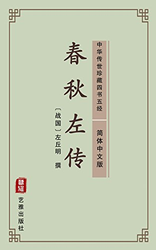

卷二十五子产论为政宽猛（昭公二十年）——胡萝卜和大棒都不可少
卷二十五子产论为政宽猛（昭公二十年）——胡萝卜和大棒都不可少#

【原文】
郑子产有疾，谓于太叔曰：“我死，子必为政。唯有德者能以宽服民，其次莫如猛(1)。夫火烈，民望而畏之，故鲜死焉；水懦弱，民狎而玩之(2)，则多死焉，故宽难。”疾数月而卒。
大叔为政，不忍猛而宽。郑国多盗，取人于崔苻之泽③。大叔悔之，曰：“吾早从夫子，不及此。”兴徒兵以崔苻之盗(4)，尽杀之，盗少止。
仲尼曰：“善哉！政宽则民慢，慢则纠之以猛⑤；猛则民残，残则施之以宽。宽以济猛(6)，猛以济宽，政是以和。《诗》曰：‘民亦劳止，讫可小康；惠此中国，以绥四方(7)。’施之以宽也。‘母从诡随，以谨无良；式遏寇虐，惨不畏明(8)。’纠之以猛也。‘柔远能达，以定我王(9)。’平之以和也。又曰：‘不竟不俅，不刚不柔，布政优优，百禄是遒(10)。’和之至也。”
及子产卒，仲尼闻之，出涕曰(11)：“古之遗爱也(12)。”
【注释】
①猛：严厉。②狎(xia)：轻视，轻忽。③取：同“聚”。人。指强盗。崔苻(wanfu)：湖泽的名称。(4)徒兵：步兵。⑤纠：矫正。(6)济：帮助，调节。(7)这四句诗出自《诗•大雅•民劳》。汔（qi）：也许可以。康：安。中国。指京城。绥。安抚。四方：指四方诸侯国。(8)这四句诗出自《诗•大雅•民劳》。从：同“纵”，放纵。诡随：狡诈行骗的人。谨：管束。遏：制止，禁止。寇虐：指抢劫行凶的人。惨：曾，乃。明：法度。(9)这两句诗出自《诗•大雅’民劳》。柔：安抚。能：亲善。(10)这四句诗出自《诗•商颂•长发》。竞：急。求：缓。优优：温和宽厚的样子。道：聚集。(11)涕：眼泪。(12)遗爱：流传下来的慈惠的人。
【译文】
郑国的子产生了病，他对太叔说：“我死了以后，您肯定会执政。只有有德行的人，才能够用宽和的方法来使民众服从，差一等的人不如用严厉的方法。火的特点是猛烈，百姓一看见就害怕，所以很少有人死在火里；水的特点是柔弱，百姓轻视而玩弄它，有很多人便死在水里，因此运用宽和的施政方法很难。”子产病了几个月后就去世了。
子大叔执政，不忍心严厉而用宽和方法施政。郑回的盗贼很多，聚集在叫做崔苻的湖沼里。子太叔很后悔，说：“要是我早听他老人家的话，就不会到这种地步了。”于是，他派步兵去攻打崔符的盗贼，把他们全部杀了，盗贼才有所收敛。
孔子说：“好啊！施政宽和，百姓就怠慢，百姓怠慢就用严厉措施来纠正；施政严厉，百姓就会受到伤害，百姓受到伤害就用宽和的方法。宽和用来调节严厉，严厉用来调节宽和，政事因此而和谐。《诗•大雅•民劳》中说；“民众辛苦又勤劳，企盼稍稍得安康；京城之中施仁政，四方诸侯能安抚。’这是施政宽和。‘不能放纵欺诈者，管束心存不良者；制止抢夺残暴者，他们从不惧法度。’这是用严厉的方法来纠正。‘安抚远方和近邻，用此安定我王室。’这是用和睦来安定国家。又说：‘既不急躁也不慢，既不刚猛也不柔，施政温和又宽厚，百种福禄全聚。’这是宽和达到了顶点。”
等到子产去世，孔子得到了消息，流著眼泪说：“他是古代传下来的有仁爱的人。”
【读解】
凡事都有两面，古人很早就认识到了这一点，并且一直注意并提倡在相反的两个方面之间寻求平衡。按照传统的观点，失去平衡，偏重一方面，忽视另一方面，事情就会出毛病。阴阳调和，刚柔相济，事情就会1烦利发展，兴旺发达。
也许有人会觉得这种观点陈旧过时了，总在讲寻求平衡的中庸之道，为什么就不可以偏激一点，极端一点？为什么不可以矫枉过正？
当然可以。但不要忘记，极端到底，就会了引起强烈的反作用。正如弹簧，用以压迫的力越大，反弹就越高，反作用力就越大。认真想来，造成这种现象的原因，仍是受著平衡律的支配。因为平衡律是宇宙间的一条普遍规律。
宽大仁慈，并不意味著软弱。它实№上既体现了胸襟和气度，也体现了涵养与明智。宽大为怀，是为了征服人心，使人心服，也是自信心的表现，可以当作笼络人心的“胡萝卜”。
威猛严厉，也不意味著残忍。它所体现的是决心和力度，为的是以强硬手段迫使越轨者和不法之徒循规蹈矩，遵纪守法，平等竞争。
过分的宽大仁慈容易使人误以为软弱，从而得寸进尺，变本加厉；过分的威猛严厉容易导致残暴，从而引起强烈反抗，法纪大乱。所以，宽和与严厉相互补充调节，可以避免走极端造成的不良后果，让人们心服口服地遵纪守法。